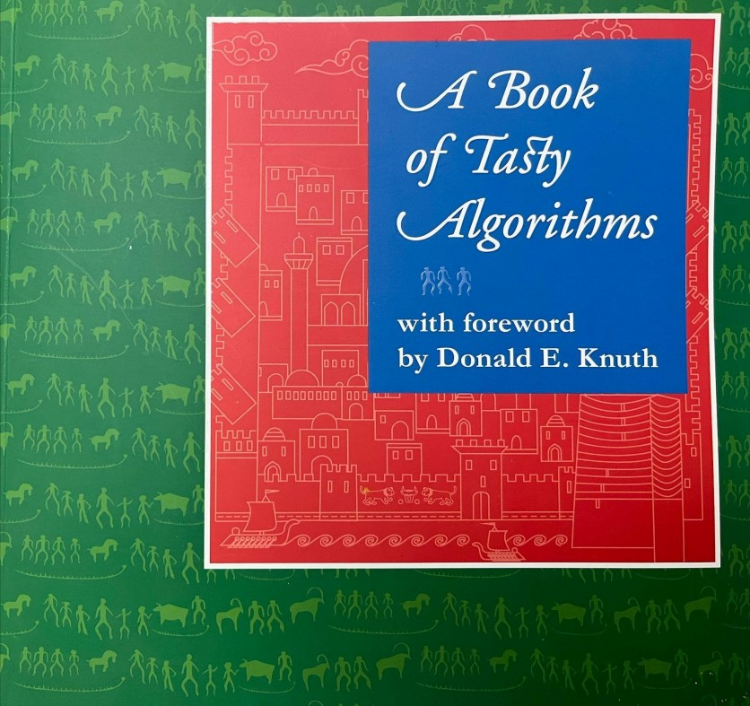
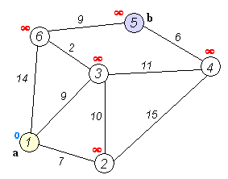

04. Algorithm & Algorithmic Actions
An algorithm is a step-by-step procedure or set of rules to solve a specific problem or perform a task. It is like a recipe in cooking: you follow a clear sequence of actions to achieve a specific result. In computer science, algorithms receive some input, process it in a logical way, and produce an output. What makes a good algorithm is that it has a clear starting point, a clear ending point, and every step is unambiguous - there is no confusion about how it should be executed.
Note
Imagine you want to find the largest of three numbers: A, B, and C. A simple algorithm would say: first compare A and B. If A is greater than or equal to B, then compare A with C. If A is still the greatest, then A is the largest number. Otherwise, C is the largest. But if in the very first comparison B was already greater than A, then compare B with C, and whichever is larger is the answer. This exact set of steps can be written in code or performed by a person.
Exercise
Bring an example of an algorithm from your daily life.
The word algorithm traces back to the name of the mathematician Al-Khwarizmi, whose systematic approach to calculation and problem-solving became foundational to modern mathematics and computing. Similarly, the word algebra comes from his mathematical treatise Al-Jabr, translated as "completion" or "rejoining".
Turing Award winner computer scientist Donald Knuth is best known for the book The Art of Computer Programming. His work helped establish algorithmic analysis as a discipline.
Computational complexity of an algorithm describes how the resources an algorithm needs (e.g. time, memory, etc.) grow as the input size increases. Time complexity tracks how many computational steps are required. Space complexity tracks how much memory is used. Within these, we distinguish worst-case, average-case, and best-case behavior depending on how the input might vary. Asymptotic (Big O) notation provides a language for comparing growth rates when inputs become large. Big O gives an upper bound: it states that the algorithm grows no faster than some function up to constant factors. Big O abstracts away hardware, implementation details, and constants, focusing only on how the algorithm scales with input size.

Knuth also wrote a special foreword publication for participants of the International Olympiad in Informatics (IOI 2019) held in Azerbaijan. A Book of Tasty Algorithms is a playful recipe book based on dishes from Azerbaijani cuisine, representing algorithmic ideas through the familiar structure of cooking, drawing a parallel between writing algorithms and following recipes.
Algorithmic Actions
Algorithmic actions describe the fundamental operations that make up any computer program. These actions determine how a program makes decisions, repeats steps, organizes tasks, and manages data. The five main algorithmic actions are selection, repetition, modularization, recursion, and name binding.
Selection
Selection means choosing between different paths of execution based on a condition. It allows the program to "decide" what to do depending on input or data values. In the pseudo-code below, if the temperature is above 30°C, the system turns on the air conditioner; otherwise, it keeps it off:
if (temperature > 30) {
turnOnAC();
} else {
turnOffAC();
}
Repetition
Repetition means performing the same set of instructions multiple times until a certain condition is met. This prevents code duplication and makes programs efficient. In programming (pseudo-code), printing numbers from 1 to 5 using a loop will look like:
for (int i = 1; i <= 5; i++) {
print(i);
}
Modularization
Modularization means dividing a complex program into smaller, manageable, and reusable parts, called modules. This improves readability, debugging, and reusability.
Note
A billing program may have modules calculateTax() and printBill() for computing tax on a purchase and printing the final receipt. Here, each module performs one well-defined task, making the program organized and easier to maintain.
At a deeper level, modularization is a principle of system organization, not limited to programming. It refers to the act of decomposing any complex system - software, mechanical, social, or educational - into smaller subsystems that can be developed, understood, or replaced independently.
In programming, modularization starts with functions, which perform a single, well-defined task. Related functions can be grouped into classes, which represent objects or abstract entities. Several classes and functions together form a module, typically a single file in a programming language like Python. A package is a collection of related modules organized in a directory (folder) structure, and multiple packages can form a library or framework, representing a higher level of modular organization. At the top level, systems or applications integrate many libraries and frameworks, sometimes developed by entirely different teams or companies.
class Calculator:
function add(a, b):
return a + b
function subtract(a, b):
return a - b
In engineering, a car is designed in modules such as the engine, transmission, and electrical system, each of which can be developed or replaced independently. In education, a curriculum may be modularized into separate courses or subjects, each focusing on a distinct domain of knowledge but contributing to an integrated learning goal. In management, an organization may be divided into departments - finance, marketing, research, operations - each acting as a module with a specific role but coordinated under one structure. In architecture, buildings are designed with modular components such as prefabricated walls or units that can be rearranged or replaced.
Modularization is about complexity management: dividing a whole into parts that are independent in function and cooperative in purpose. At even higher levels, modularization can be systemic or societal. Complex infrastructures - transportation networks, communication systems, and governance structures - are modularized into interacting parts so that local failures do not collapse the entire system.
Exercise
Take a major goal of yours for the next six months and divide it into manageable modules.
Recursion
Recursion occurs when a function calls itself to solve smaller parts of the same problem. Each recursive step reduces the problem size until it reaches a base case, the simplest situation where the function stops calling itself. The base case is not the starting point, it is the stopping condition
Note
You can imagine real-life recursion: a tree has branches, branches have smaller branches, those branches have their own smaller branches, etc. But this recursion may go infinitely and you usually need to stop at some point. That stopping condition is the base case. Let's say, after four-five branching steps a tree will stop growing any branches. With that logic, there is no base case in the case of two mirrors oppositely directed to each other. There is no base case and you will see infinite reflections. Or: infinite recursion.
We know that the factorial of n is the factorial of the previous number multiplied by n. That means:
factorial(5) = factorial(4) * 5
factorial(4) = factorial(3) * 4
factorial(3) = factorial(2) * 3
factorial(2) = factorial(1) * 2
Or, as a general case:
factorial(n) = factorial(n-1) * n
We can write the following recursive function:
factorial(n) {
return n * factorial(n - 1);
}
But this pseudo-code has an issue. It is akin to two mirrors looking at each other - it will never stop. It will return the following functions:
factorial(1) = factorial(0) * 1
factorial(0) = factorial(-1) * 0
factorial(-1) = factorial(-2) * -1
// ad infinitum
Not only factorial(-1) doesn't make sense, but also you will be in an infinite recursion. To fix it, you need to add a halting (stopping) condition: Base case.
factorial(n) {
if (n == 1 or n == 0) return 1; // base case
else return n * factorial(n - 1); // recursive call
}
So, your code will work in the following way, given that n is a non-negative number (in this case n=4):
factorial(4) = factorial(3) * 4 = factorial(2) * 3 * 4 = factorial(1) * 2 * 3 * 4 = 1 * 2 * 3 * 4 = 24.
Exercise
Write a pseudo-code for recursive algorithm to find the sum of natural numbers.
Name Binding
Name binding refers to the process of connecting identifiers (names) to specific objects, values, or memory locations in a program. It defines where and when a variable's name is linked to the data it represents. This action allows the program to store, access, and update information consistently.
When a program needs to store the value 70, it allocates memory to represent it. For example in memory cell represented with hexadecimal number 0x21A95BC, bytes will be allocated to represent 70 in binary. Then, if you want to reuse that value in the future, you need to assign (not equalize) that value to an identifier.
speed = 70
The identifier speed becomes bound to the value 70 stored in memory. If later the value changes (speed = 50), the same name now refers to a different value, possibly stored in a different memory location.
Dijkstra's Shortest Path Algorithm
In many information systems, a common task is to search for an item. In some systems, the problem involves navigating networks, such as transportation systems or computer networks, where components are connected by links with different costs, delays, or capacities. In these cases, the goal is not merely to locate an item, but to determine an optimal path through the network.
Edsger W. Dijkstra was a Dutch computer scientist and one of the founders of modern computer science. Dijkstra's algorithm is a classic solution that computes the shortest path from a starting node to all other nodes in a weighted graph where all edge weights are non-negative. The algorithm maintains a set of nodes whose minimum distance from the start is already known. At each step, it selects the node with the smallest temporary distance, finalizes its distance, and then updates (relaxes) its neighbors by checking whether passing through this node yields a shorter path.

A priority queue is often used to efficiently select the next node with the smallest distance, which allows the algorithm to scale well for large graphs. The algorithm finishes when all nodes have been processed or when the destination node is finalized. The output is both the shortest distance and the actual path taken.